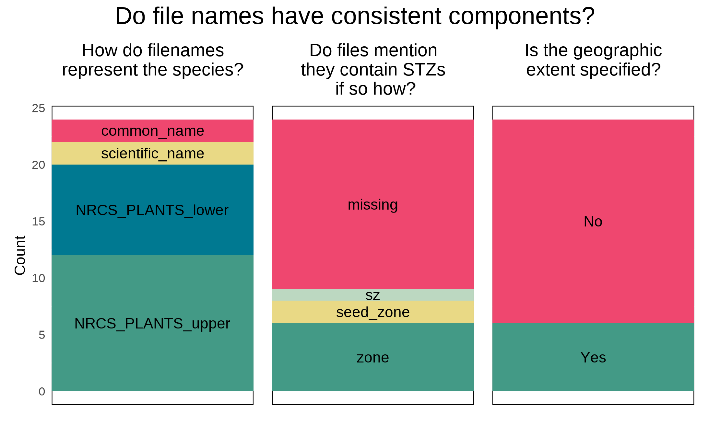
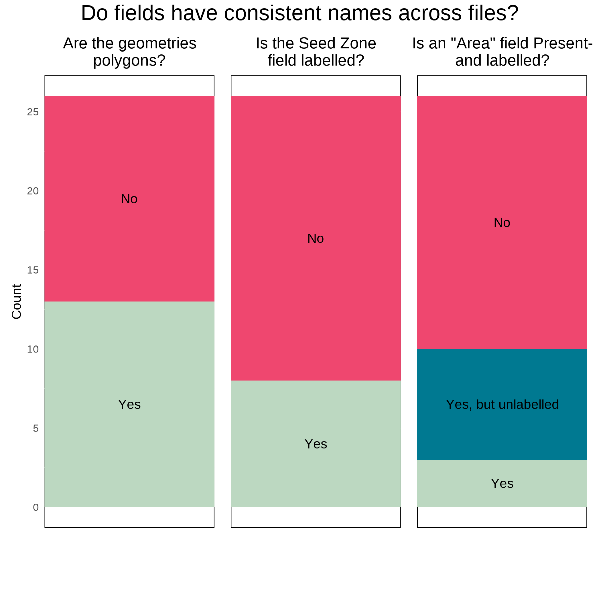
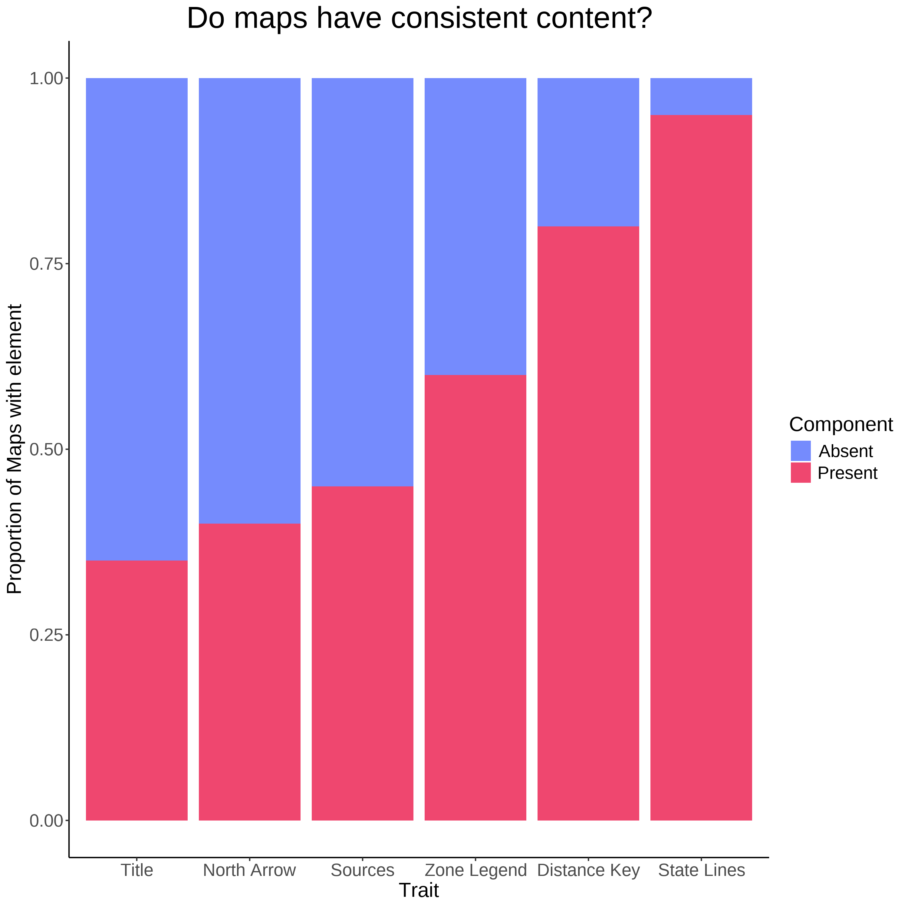
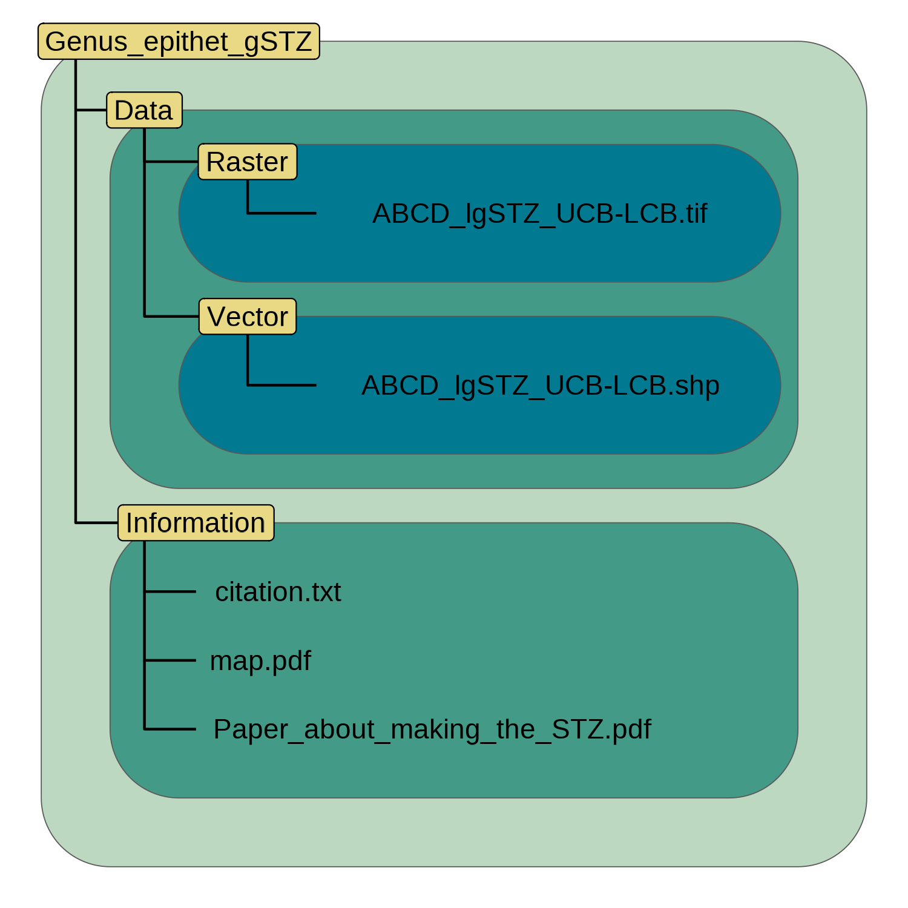
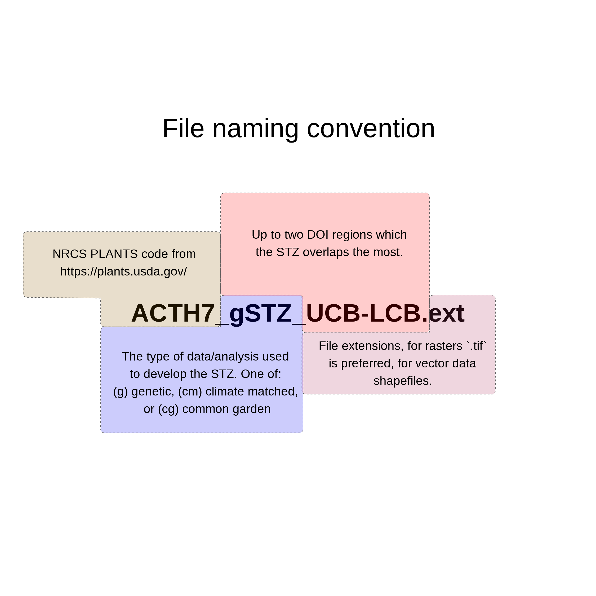
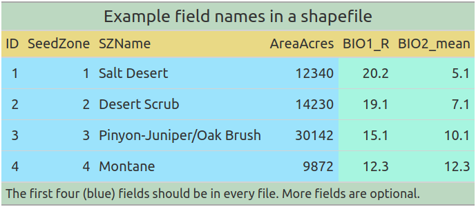

safeHavens and eSTZwritR; R packages for prioritizing germplasm collections for restoration and conservation
Abstract
Introduction
Current estimates suggest that 45% of flowering plant species are at risk of extinction (Isbell et al., 2023; Bachman et al., 2024). The loss of genetic diversity resulting from habitat loss and fragmentation can increase extinction risk by reducing populations’ capacity to adapt to increasingly changing conditions (Frankham, 2005). Two growing responses to mitigate the loss of genetic and taxonomic diversity and lessesn extinction risks include habitat restoration for in situ conservation and the collection and storage of plant germplasm in ex situ collections (Volis and Blecher, 2010; Heywood, 2017; Westwood et al., 2021). Ecological restoration has become a tool to enhance habitat quality in natural areas or to convert land back to natural areas to provide connectivity between remnant parcels, helping to preserve plant and other biodiversity in situ (Gann et al., 2019). Long-term ex situ conservation is used when a species has, or is expected to experience, the loss or degradation of its habitat beneath thresholds that can support the species persistence in the wild (Oldfield and Newton, 2012; Mounce et al., 2017). Both approaches rely on the use of native propagules to populate restored habitat or ex situ collections. Developing native plant propagules requires the collection, and agricultural amplification of germplasm to meet the volumes required for use in restoration and conservation projects [SHRIVER et al. 2026; Wambugu et al. (2023)].
Central to attaining germplasm collections is the acquisition of adequate amounts of genetic diversity for a portion of the species range for in situ restoration or of the entire species for ex situ conservation [Walters and Pence (2021); SHRIVER et al 2026]. This is critical to capture the genetic diversity of a species and promote its capacity to adapt to environmental fluctuations and long-term change Seed banks commonly use minimal rule-of-thumb guidelines developed from agricultural and population genetics studies (Hay and Probert, 2013; Westwood et al., 2021) to inform the collection of germplasm from wild species for in situ restoration projects and ex situ. Such guidelines include the maximum number of propagules that can be collected to safeguard the persistence of natural populations (i.e., avoid over-harvesting), the minimum number of individuals that need to be sampled per population, and the number of populations to sample per species to reach genetic diversity targets (Basey et al., 2015; Nevill et al., 2018). Sourcing germplasm to populate restoration projects also requires considering the geographic distance and habitat similarity between source material and restoration sites, to avoid using maladapted phenotypes unlikely to withstand environmental conditions at the restoration site (Vander Mijnsbrugge et al., 2010). However, a variety of goals exist at the institutional, programmatic, and bio-regional organizational levels, as well as opinions among curators, which have fostered tailored strategies beyond rule-of-thumb guidelines (Guerrant Jr et al., 2014). Furthermore, these minimal guidelines do not guarantee alignment or achievement of goals for all observed species and population genetic structures or population vital rates because of nuances in the biology and ecology of individual species (Whitlock et al., 2016; Hoban et al., 2020; Bucharova et al., 2025; Höfner et al., 2025).
However, the germplasm collections desired for ecological restoration and ex situ conservation differ in a key attribute. Restoration collections seek to maximize the likelihood of restoration success at sites in a defined focal area and time and seek to identify populations with the highest chance of doing so while maintaining some allelic diversity for at site selection (Johnson et al., 2010). Ex situ germplasm collections, on the other hand, aim to maximize coverage of neutral genetic variation, the material which allows evolution a wide array of phenotypes to act upon, following the logic that no set of phenotypes are universally most fit, and the long term persistence of the species will require a wide base of standing diversity for selection to act upon.
While accessioning and maintaining germplasm collections ex situ to develop propagules for restoration and conservation activities is cost-effective, the collection of material across a species range, remains difficult due to costs associated with field work and effects of weather (Li and Pritchard, 2009; Erickson and Halford, 2020). Hence, the sampling of germplasm from a species aims to maximize the total target genetic diversity, or the suitability of populations for use in restorations, while minimizing the cost of field work. However, systems for guiding and measuring progress relative to this principle are absent for rare taxa, and for common taxa rely on data sets that are may or may not to relate to an individual species biology (e.g., provisional STZs or ecoregions), or require considerable research to develop (Durka et al., 2017; Davidson and Germino, 2020).
Here, we present two geospatial software packages to help curators refine and implement their collection goals. Both packages are free and open-source software (FOSS) developed in the R programming language, and require minimal familiarity with R to use. The first tool, safeHavens (https://sagesteppe.github.io/safeHavens/), which is global in coverage, aims to maximize the putative coverage of neutral genetic variation across the entirety, or subsets of, a species range using proxies: 1) geographic, 2) ecoregional, and 3) environmental coverage of ex situ and restoration collections in areas lacking defined seed transfer zones, or in scenarios where seed transfer zones may not align with the goals of restoration collections. The second tool, tailored to the Western United States - but globally applicable, eSTZwriter (https://sagesteppe.github.io/eSTZwritR/) assists quantitative geneticists in producing standardized spatial data products describing areas for targeted seed collection and restoration planning, which may be readily used by curators.

safeHavens
safeHavens is a landscape genetics inspired R package to develop taxon specific sampling schemes to guide attempts to maximize either the neutral genetic diversity, or adaptive potential, of taxa using a variety of simple computational approaches. safeHavens partitions species ranges into geographically constrained groups by utilizing clustering of three types of distances: realized geographic, theoretical resistance to gene flow, or environmental, each of which has been empirically shown to influence species genetic structures, although effects are not ubiquitous across species (Slatkin, 1993; McRae, 2006; Wang and Bradburd, 2014; Durka et al., 2025). In general it seems that environmental distances may be best suited when a species is expected to have strong local adaption (e.g. due to short generation times, strong selective pressures, or long extant populations), resistance distances where barriers to geneflow are strong but local adaption may occur more slowly, and geographic where levels of local adaption and resistance to geneflow are intermediate. These clusters, represented by spatial data, can be used to design germplasm collection endeavors, assigning a desired number of target samples to each cluster, akin to existing sampling approaches. The spatial data generated by this process can then be sent to field crews to guide both the planning and implementation of collections.
Usage
All package functionality requires only up to four data inputs, species occurrence data (e.g. from GBIF), land surface vector data (e.g. from Natural Earth), and for some functions climate variables (e.g. from WorldClim) and geomorphology variables (e.g. from EarthEnv). The safeHavens package includes seven different functions to structure sampling: PointBasedSample, EqualAreaSample IBDBasedSample, and OpportunisticSample which is derived from the PointBasedSample approach but designs additional sampling around existing collections. These functions use different criteria to partition the geographic range of the species into geographic zones/strata that can serve as a basis to structure geographic sampling. These functions are all highly adaptable to support n collection areas, and a single collection per geographic unit. A general vignette on the package, which covers these functions is available at Getting Started.
Landscape resistance to geneflow is modelled using the function IBRSurface and its data preparation helpers: buildResistanceSurface, populationResistance, and optionally the final sample draw to be generated using PolygonBasedSample. A single surface can be used for a landscape, or surfaces can be parameterized for individual species. The isolation by resistance workflow creates a theoretical surface, populated with user specified values, that represents the cost to movement of genetic material (e.g. fruits and seeds, and pollen) between populations, see Zeller et al. (2012) for caveats. A vignette covering the preparation of surfaces is available at Isolation by Resistance.
Environmental distance, akin to the concept of isolation by environment, tailored to the biology of individual species, is accommodated by EnvironmentalBasedSample, and its data preparation helpers: elasticSDM, PostProcessSDM, RescaleRasters, writeSDMResults. This workflow seeks to identify user supplied variables associated with species occurrences, and cluster the species range into n specific regions using these variables and hierarchical clustering approaches, similar to a approaches used in a variety of existing case studies; optionally the surfaces can be resampled using PolygonBasedSample (Doherty et al., 2017; Shryock et al., 2017; Crow et al., 2018; Marinoni et al., 2021). A vignette is available at Species Distribution Models.
An extension to EnvironmentalBasedSample, that will predict the probability of suitable habitat under future climate scenarios and assign the same environmental clusters is supported by a Predictive Provenance workflow. This workflow stems from the EnvironmentalBasedSample workflow, but does not include the PCNM surfaces or coordinate weights in the clustering outputs, as these have to corollaries under future time points. Novel climates for the species are detected using the beta-coefficient variables and the MESS algorithm (Elith et al., 2010), and these are clustered indepedent of the existing clusters, and then a second clustering process determines the most similar existing cluster, which may serve as a potential seed source for them.
A vignette is available at Predictive Provenance.
An alternative to the EnvironmentalBasedSample workflow, that uses Bayesian hierarchical modelling (a type of GLMM) and is able to incorporate posterior estimates of covariate uncertainty into a consensus clustering process, is also available. This workflow optionally performs feature selection, or generation of PCA axis for predictors, uses CASTs forward feature selection to identify performant variables before using brms with horseshoe priors to fit a model that includes a spline to reduce the effects of spatial autocorrelation of residuals on the interpretation of model parameters (Wood, 2003, 2017; Bürkner, 2017; R Core Team, 2025). The model posteriors, a rescaled raster stack RescaleRastersBayes, then undergo clustering via PosteriorCuster using sampling from the posterior draws, and the consensus clustering results are identified, and the most stable results, alongside uncertainty estimates are returned. A vignette is available at Bayesian Approaches.
PolygonBasedSample works on any type of polygon data, but is focused on supporting either provisional or empirical seed transfer zones, or ecoregion level data - the two most commonly used data sources for designing seed. PolygonBasedSample is able to incorporate multiple user specified decisions to maximize sample numbers in various strata based on their size, number of disconnected areas, or - when the data are available, temperature. Accordingly, it can loosely accommodate the variables that went into the generation of seed transfer zones or ecoregions. A visual guide to these function is available at Polygon Based Sample.
Additionally, a function for sampling rare species based on occurrence data KMedoidsBasedSample is included, which can run on geographic, resistance, or environmental distances. When using geographic distances as input, and if coordinate uncertainty data available, this function will jitter site coordinates within the measures of uncertainty so simulate actual population positions, it will also ‘drop’ populations that may be extinct, incorrectly identified, or of another taxon to give results that are resilient to these types of data imperection. The function uses co-location network strength to identify a set of populations that minimizes the sum of distances in ‘n’ user specified groups. A vignette is available at Rare Species.
A final function, that exists for creating cartographic boundaries to for use with mobile GIS software is PrioritizeSample, which creates concentric rings around the center of each sampling unit to try and guide collectors towards center regions of collection zones rather than extremes. It is detailed only in a vignette that emulates the total process of designing an actual sample design for multiple species in Worked Example.
Detailed Functionality
The isolation by resistance workflow is separated into three main phases to allow users to review, modify, and tailor intermediate objects. Resistance surface rasters are created by buildResistanceSurface, followed by the sampling of these surfaces to create distance matrices using populationResistance, and finally, the classification of the species range into clusters with less resistance to movement within than between them by IBRSurface, the polygons from IBRSurface are then submitted to the general sampling function PolygonBasedSample. A cost surface raster that represents resistance to gene flow for the species across the landscape, used for calculating least-cost distances between sites, is parameterized in buildResistanceSurface it natively supports layers for oceans, lakes, rivers, topographic ruggedness, and a species distribution model’s probability surface, but also allows users to incorporate additional features and weights as desired.*** Pairwise distances across the cost surface and between randomly sampled sites across the buffered species range are used to create a distance matrix for clustering in populationResistance. Sites are hierarchically clustered into n groups, and pixels of their buffered species range are iteratively assigned to each cluster using IBRSurface, using NbClust with a silhouette method (Charrad et al., 2014). IBRSurface will return a polygon sf object of all clusters that work with PolygonBasedSample to assign a number of desired collections to each identified cluster.
The data preparation for the EnvironmentalBasedSample is also compartmentalized into several functions, allowing users to review, modify, and save intermediate outputs. A species distribution model, using user-specific explanatory (raster format) supplemented with internally derived low-order PCNM surfaces, with internal occurrence data thinning and pseudo-absence generation, spatial cross-validation folds, and automatic variable selection using elastic net regression and recursive feature elimination, is prepared using elasticSDM (Kuhn, 2008; Aiello-Lammens et al., 2015; Naimi and Araujo, 2016; Tay et al., 2023; Meyer et al., 2025; Oksanen et al., 2025). The predictions of habitat suitability are converted from probabilities into a binary surface of presence/absence using a user-specified threshold metric, and areas of known occupancy are optionally ‘burned’ back onto this raster surface, the result being a surface that tries to maximize coverage of the species’ occupied habitat, using PostProcessSDM (Hijmans et al., 2024; Hijmans, 2026). The environmental rasters, used as explanatory variables, and with terms included in the final sdm model, are then rescaled, based on their contributions (beta-coefficients) to the model, for use in identifying clusters of the species range that experience more similar relevant habitat characteristics than other portions, using RescaleRasters. Results from these processes may then be saved using writeSDMresults. The germplasm collection sample is implemented by EnvironmentalBasedSample, which samples and clusters n locations across the raster stack, a k-nearest neighbor classifier is then trained on a relatively class-balanced resampling off these clusters, and spatial clusters are identified using predictions from it (Venables and Ripley, 2002). If a user desires more than one germplasm collection per cluster, they may use PolygonBasedSample with the output from EnvironmentalBasedSample.
KMedoidsBasedSample is intended for use with rare species and maximizes the geographic coverage (by minimizing the sum of geographic or environmental dissimilarities) of n collections by identifying individual populations to sample, in consideration of common data quality issues in occurrence data. KMedoidsBasedSample is the only function in safeHavens that directly models raw population data rather than generalized polygonal geometries around them. From user-specified data, occurrence records that are to undergo coordinate jittering, and any that may undergo population dropout (due to either misidentifications, conflicting taxonomy, or local extinction), are identified. A user-specified number of bootstrap simulations permute eligible sites, and updated distance matrices are fed into K-medoids repeatedly, within each run multiple restarts are allowed, to minimize the cost of the solution for each iteration (Maechler et al., 2025). Across all bootstrap iterations, each unique combination of candidate sites (set) is counted to identify the network of sites with the lowest cost (highest co-location strength), and the individual sites within this network are ordered by the number of times they were returned across all bootstrap simulations.
eSTZwritR
Empirical seed transfer zones (eSTZs) are gaining popularity among restoration practitioners as tools to identify the most appropriate seed source for a species at a restoration site (McKay et al., 2005). eSTZs are becoming more widely used for two primary reasons: 1) they are based on empirical data, such as phenotypes in a common garden, and 2) there are generally fewer zones than provisional seed transfer zones, thereby reducing the number of lineages that require cultivation in agricultural settings. Although popular, the development of eSTZs for a species is a costly and time-consuming process, most often involving common gardens or genetic studies, with many populations from across the species range incorporated as samples (Kramer et al., 2015).
While practices for developing eSTZs are becoming more defined, to our knowledge, no standards exist for sharing eSTZ results (Supplemental 1). Although eSTZs are produced by a handful of research of groups, inconsistencies vary across the spatial data products used to report and share eSTZs.
The success of a restoration project relies on the timely application of techniques that are suitable for the site at hand. Hence, the dissemination of ideas during and after a restoration project is the best opportunity to improve restoration outcomes (Figure 1). However, spatial data are notoriously complex and difficult to transmit, historically requiring specialised software, and spatial data require both written and geographic data (e.g., coordinates and relations between them) in the form of spatial data products (e.g., rasters and shapefiles) to accurately convey their meaning. Given the relative complexity of communicating precise spatial information, standards should exist to ensure not only its accuracy and precision but also its ease of interpretation and use.
Software
To make these suggestions easy to implement we have created an R package, eSTZwritR (pronounced ‘easy rider’), which can implement all of them, less the statistical processing, with minimal user inputs. The package is installable from GitHub https://github.com/sagesteppe/eSTZwritR and has a GitHub Pages website (https://sagesteppe.github.io/eSTZwritR/) for users interested in better understanding its functionality, and which includes supplemental figures and details not discussed here.
The package requires only five functions to produce a directory with the contents discussed above, with minimal data entry. Most importantly, the entries are well outlined and easily entered without requiring close attention to detail. These results should allow for simple utilization of existing empirical seed-transfer zone resources. This software was designed based on a review of the data sets below…
Methods
Using 23 sets of eSTZs produced for 22 taxa, across the western United States, we showed that most of the spatial data developed and disseminated to share the results of an eSTZ are inconsistent (Supplemental 1). We have already observed significant hindrances to the uptake of these data at the practitioner level and searched for consensus within these data. Subsequently, using any consensus (wisdom of the masses) from these data combined with standard conventions of data sharing, we present a set of guiding standards for researchers in the United States to make the results more consistent.
We conducted a review of all eSTZs on the Western Wildland Environmental Threat Assessment Center (WWETAC) website as of May 1, 2024 (https://research.fs.usda.gov/pnw/products/dataandtools/datasets/seed-zone-gis-data). Each data product (file name structure, field naming conventions, and directory structure) was manually scored, and all analyses were performed in R version 4.2.1.
Results

In Figures 2 through 4, we present inconsistencies that we believe, or have observed, to interfere with practitioners’ workflows. We encountered considerable inconsistencies within file names (Figure 2), in directory structure and naming (Figure 3), and cartographic elements of the 20 maps available (Figure 4). While some consensus existed around the use of USDA NRCS-Plants codes for denoting the taxon contained in the file (Figure 2), the lack of file names mentioning what attribute about the taxon they contained (e.g. ‘zones,’ ‘seed_zone,’ ‘sz’), and the lack of specified geographic extents can make determining the specifics of the file difficult unless it is explicitly opened in a Geographic Information System (GIS) software.

The naming of the fields (columns) within vector data file presented the most problematic results (Figure 3), here we focus only on three inconsistencies. Different uses of polygon geometry were implemented to represent the individual seed transfer zones, that is, sometimes all portions of a seed transfer zone, when at least some components are disconnected, where stored within the same object or row (i.e., multipolygon, a data set that includes at least two spatially separated parts). At other times, each discontinuous portion of the range was stored as its own polygon. For most infrequent Geographic Information System (GIS) users, we observed that multipolygons can be confusing and require them to use several moderately advanced spatial techniques to interact with. Surprisingly, within each shapefile, the field denoting the seed zones was often ambiguously labeled or entirely lacking any indication (Figure 3). In several instances, it took several minutes to determine which field was the seed zone by toggling through and visualizing many fields, despite us having already interfaced with all of these products multiple times.

Discussion
Some consensus exists among eSTZ developers for a range of attributes related to the distribution of data products. Combining these opinions with best practices for data sharing and experience as users of each of the existing empirical products results in the following recommendations.
Directory Structure

eSTZs should be distributed using a predictable directory structure that allows users to be immediately familiar with where to find the content (Figure 5). We recommend that all directories (folders) have two main subdirectories (Figure 5), one containing the essential data products, preferably in both raster and vector data formats (see ‘Data Formats’). The second directory contains information related to the product, including a formatted citation for data use, a map for quick reference, and any materials describing the development of the product, both as a paper and a text file of quick metadata attributes.
File Naming

The files within the directory should follow an easily interpretable naming convention that allows users to import todata various softwares while also describing the essential attributes of the data product. We recommend (Figure 6) each file name has three main components. The first component is the USDA PLANTS code, and the second is the method used to develop the STZ - currently one of ‘g’, ‘cg’, ‘cm’ (for genetic, common garden, and climate matched, respectively), and the final is up to the two main regions which the product overlaps. In the United States, we recommend the use of the 12 Department of Interior regions as they cover contiguous geographic expanses, are few enough to be easily remembered, and balance L2 Omernik ecoregions with easier to remember state lines. However, in other nations, the use of ecoregions may be more desirable.
Maps
Maps of the data product should be included in the ‘Information’ directory. Many questions about eSTZs can be answered quickly and simply by a practitioner consulting a map saved as a PDF with the essential cartographic components; fortunately most developers already supply these. We recommend that each map contains the following elements: north arrow, scale bar, state borders, geographically relevant cities, coordinate reference system information, sensible categorical color schemes for the seed zones (e.g. from ColorBrewer https://colorbrewer2.org), a legend, the taxon’s name as a title, and the maps theme (‘Seed Transfer Zones’) as a subtitle.
Data Formats
We recommend that the spatial data associated with an eSTZ be distributed using both popular spatial data models, vector and raster. For vector data, we advocate the continued usage of the shapefile format, whereas for raster data, we propose the use of geoTIFFs (‘tifs,’ the. tif extension). In our experience, tifs seem to be the most widely used raster data models in ecology for non-time series data, and are supported by effectively all GIS software.
Vector Data Field Attributes

The order of the fields (or columns) of the vector data should follow a predictable pattern (Figure 7), allowing humans to interact with the data in a graphical user interface (GUI) to quickly detect their field of interest.
We recommend that each vector file have at least four fields in the following order and of the following data types. 1) The numeric integer (ID) a unique number associated with each individual polygon in the file.
2) Seed Zone (numeric integer) a unique identifier for each of the eSTZs delineated by the product developers, which allows for quick filtering of the data based on a simple numeric value that is difficult to misspecify.
3) SZName (character): a human-developed name for the zone that may refer to an axis of a principal component analysis, for example, ‘LOW MEDIUM LOW’, or be defined by the product developers. We propose that semi-informative names should be developed before data distribution to help practitioners more easily convey important attributes.
4) AreaAcres (numeric - integer) of each polygon.
In addition to these standard field naming and placement conventions, we recommend a series of standards for the contents within these essential fields and how to format any additional fields relevant to the project (see package website).
Discussion
Both packages are intended to increase the availability of native germplasm to increase the chances of success for terrestrial restoration and ex situ conservation. safeHavens supplies curators, and planners, with a set of tools to clearly determine options for specific sampling programs, which may be used for evaluating nad reporting progress towards conservation goals, as well as guiding field sampling activities. eSTZwritR helps research groups communicate and share the results of their findings wih germplasm curators and these curators with field crews, and restoration ecologists with loosely determing seed lots although tools such as Seed Lot Selection tools are now preferrable for most of these applications.
Both packages ensure that curators and groups do not require access to licensed Geographic Information System software (e.g. ArcPro), and are able to be readily modified and extended for various goals and utilities.
An area of improvement we have identified for the generation of eSTZs is the inclusion of spatially explicit estimates of zone uncertainty. In safeHavens (elasticSDM and bayesianSDM) we utilize area of applicability surfaces to restrict predictions to multivariate portions of environmental space that exist in the training set and the statistical models can make inference too. Further, within these areas, using re-sampling from the bayesian models posteriors, we return raster surfaces conveying the stability of cluster assignments - allowing users to better understand zones that are well defined relative to more equivocally classified areas.
Precedent for separating seed collection from direct planting considerations: https://pmc.ncbi.nlm.nih.gov/articles/PMC7520178/
Discussion topic: the blended need for priotitizing collections of immediately usable germplasm, while maintaining extant diversity for unforeseen alterations to climate models or conditions. Predictions are sorcery, Discussion about the mismatch between restoration need in a seed zone, versus storing the materials. Tailoring zones at end: - Barga: not all seed zones are created equal (Barga et al., 2023) - Winkler: (Winkler et al., 2024) - used sst to find collection gaps St. Clair et al. (2022)
Discussion topic: “the question of local”, provenance, and seed mixing structures. - very active many opinions, we believe our functionality can help ensure a curator can design collections around any intended usage. - How much to balance existing genetic structure, with adaptive potential, and uncertainty of climate predictions Mix and match: regional admixture provenancing strikes a balance among different seed-sourcing strategies for ecological restoration - prober 2015 - https://www.frontiersin.org/journals/ecology-and-evolution/articles/10.3389/fevo.2017.00095/full ; great discussion on how to consider these tools and perspectives. - (Vitt et al., 2022) there is no consensus
Conclusions
Many opinions exist on the goals of restoration and germplasm conservation, and the suitability of various seed sourcing strategies for restoration plantings (Vitt et al., 2022). Here we present free and open-source software, and link to vignettes with well documented workflows, that aim to support the immediate goal of immediately growing collections suitable for short or long term goals via safeHavens. We further present software eSTZwritR to enhance the sharing of empirical seed transfer zone data products. In closing, we hope that any parties, worldwide, interested in collecting native seed will be able to develop and immediately start implementing plans for collecting materials.
ORCID
Reed Benkendorf https://orcid.org/0000-0003-3110-6687
Jeremie Fant https://orcid.org/0000-0001-9276-1111
Sophie Taddeo https://orcid.org/0000-0002-7789-1417
Chris Woolridge https://orcid.org/0000-0002-2721-2092
Acknowledgements
The Bureau of Land Management for partially funding the developement of these tools through work contracted to the Chicago Botanic Garden. Emily Woodworth for creating the ‘Dissemination’ figure. Claude is acknowledged for assistance with coding development of portions the safeHavens package